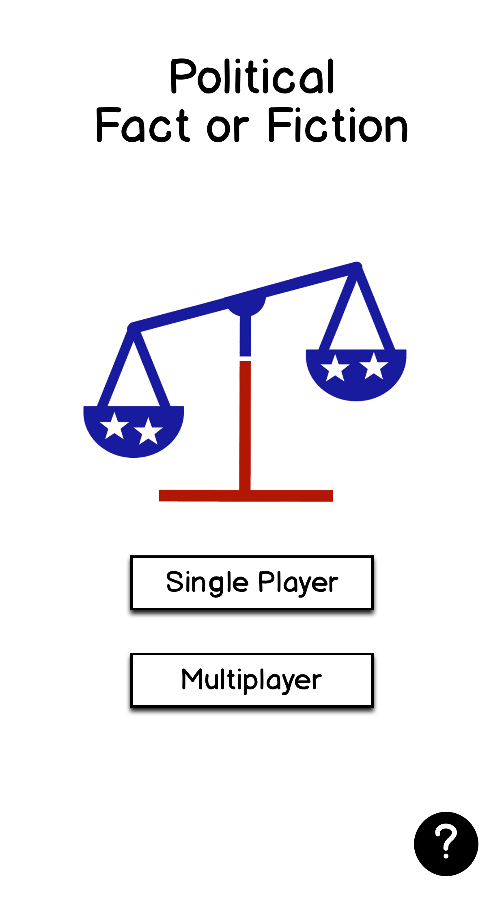
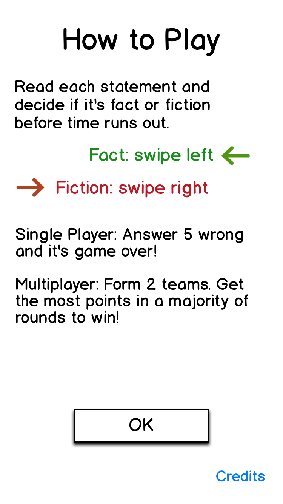

Political Fact or Fiction
A trivia game where the trivia isn't trivial
Did you know the Prohibition Party still exists and is fielding a presidential candidate for 2016? Or that Donald Trump sells cologne ("Empire by Trump" and "Success by Trump")? Play our game and you'll know even more!
About our game
Our game is simple. We show you a statement and you tell us if it's true or false before time runs out. If you chose right, you get a point. Wrong, and you lose a heart. Run out of hearts, and it's game over. To make you lose more quickly, time decreases as you rack up points.
In multiplayer mode, you can play with and against your friends and acquaintances. Since we know making group decisions takes more time, we let you choose how much time you get in team mode.
Presently, our game consistents of over 500 questions spanning the political spectrum. We cover presidential candidates, laws that impact you and issues at the forefront of political discourse. We draw a wide range of sources for our statements in hopes of keeping our game politically neutral.
Screenshots
 Demo video
Get our game
Download our game from the iTunes App Store.
About us
This game was created by two C.S. grad students at UCLA, Wesley Minner and Jason La. Wesley has a B.S. in electrical engineering from UCLA and worked as an applications engineer before attending grad school. Jason reads the news compulsively because he spent 8 years working for the L.A. Times. Jason has a B.A. in history from Yale.
If you'd like to write to us, email political.fact.fiction@gmail.com